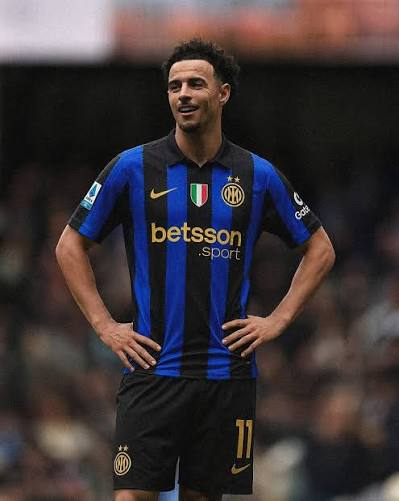
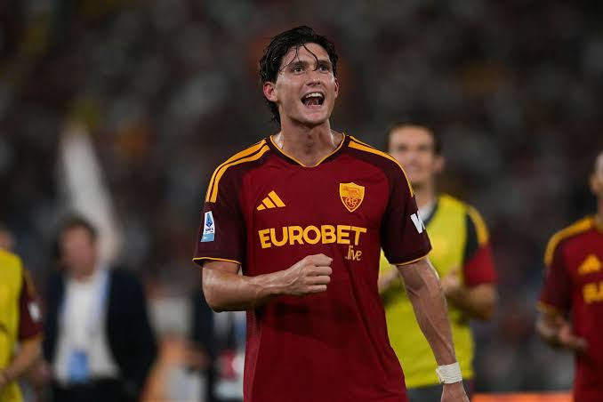
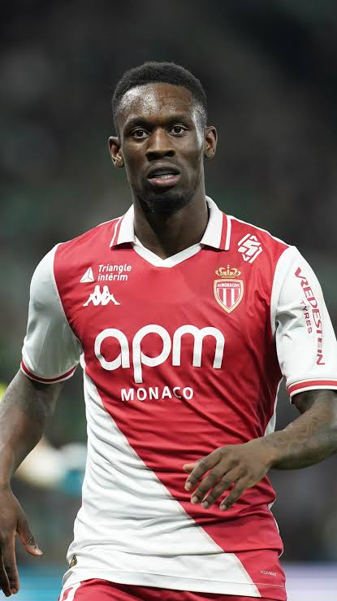
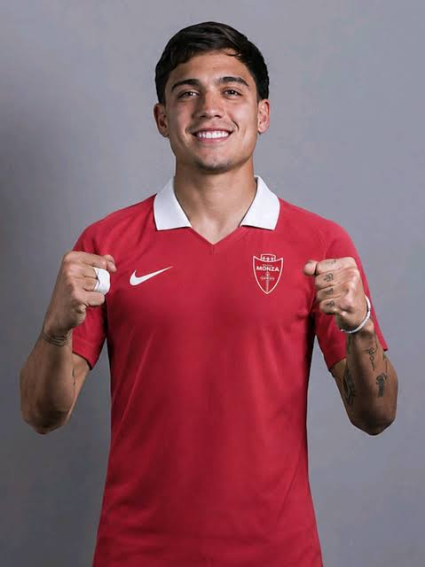
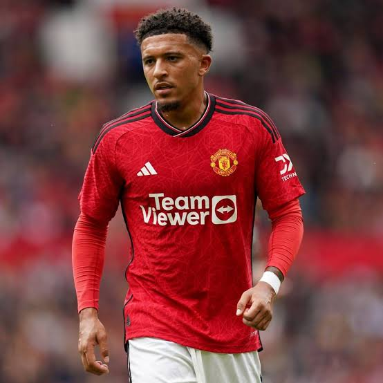

En este apartado destacamos cinco rumores de fichajes de la Serie A italiana. Exploramos posibles transferencias y negociaciones que podrían modificar las plantillas de los clubes a lo largo de la temporada 2026/27

El rumor terminó concretándose: el Inter confirmó su incorporación el 21 de agosto de 2026, con contrato hasta junio de 2031. Reuters situó el coste estimado en unos 35 millones de euros, incluidas variables; el importe oficial y la cláusula no se publicaron.

La Roma confirmó su llegada en préstamo por 1 millón de euros, con opción de compra que puede convertirse en obligación si se cumplen determinadas condiciones. La operación quedó cerrada durante el mercado de verano; el importe total definitivo dependerá de las condiciones pactadas.

Durante agosto circularon informaciones sobre el interés del Napoli, con una posible oferta cercana a 60 millones de euros. No encontré confirmación de un acuerdo definitivo; por tanto, esa cifra debe tratarse como una valoración periodística y no como un precio de fichaje.

El extremo argentino sí terminó incorporándose al Monza mediante un traspaso definitivo, por una cifra aproximada de 4,5 millones de euros. El acuerdo contempla que Boca Juniors conserve el 40 % de una futura venta; la duración contractual y la cláusula de rescisión no quedaron detalladas en la fuente consultada.

Sancho quedó como agente libre en junio de 2026, tras finalizar su contrato con el Manchester United. Durante el mercado fue vinculado con clubes italianos, entre ellos la Roma, pero no se confirmó ningún acuerdo; al 14 de octubre de 2026 continúa sin club. Su valor de mercado ronda los 18 millones de euros, según Transfermarkt.